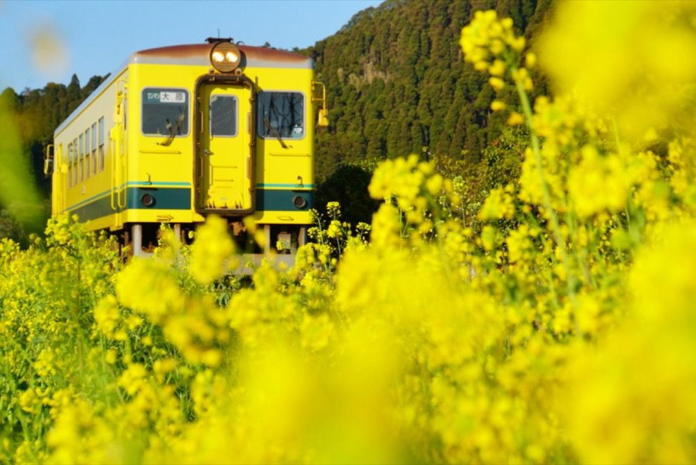
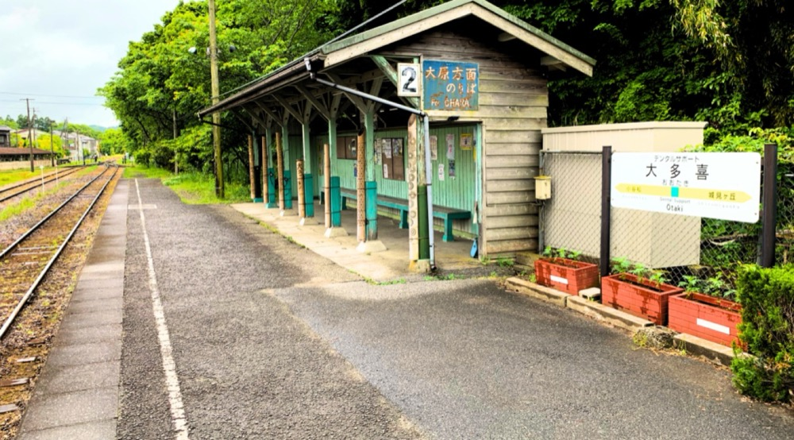
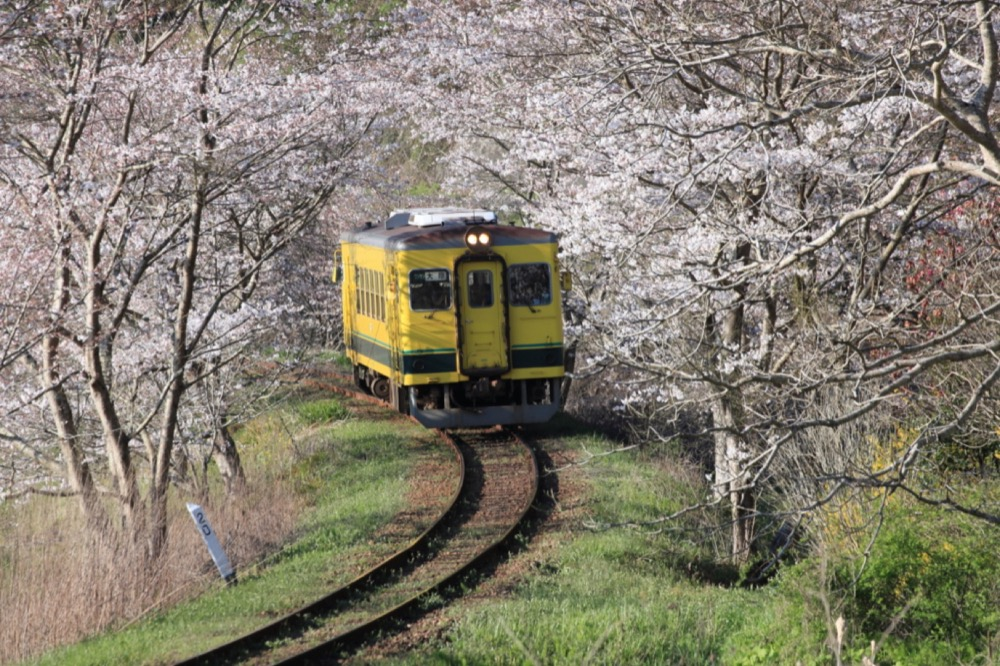

房総半島の架け橋を支えている若き代表
古竹 孝一Koichi Furutake
いすみ鉄道株式会社 代表取締役
1971年7月27日香川県生まれ。1997年、日本大学大学院理工学研究科交通土木工学専攻（現・交通システム工学専攻）修士課程修了。大学院修了後に香川へ戻り、高松市の日新グループのために尽力。さまざまな経験を経て、人を辞めさせない会社づくりをモットーに、35歳で日新グループ全体の社長に就任。40歳で取締役会長。2018年11月に社長公募により、いすみ鉄道株式会社の代表取締役に就任。
企業サイトを見るTRACK 01
房総半島の架け橋を支えている若き代表

千葉県大多喜町、そしていすみ市の各地域をつなげているいすみ鉄道株式会社は、第三セクター鉄道会社であり、黄色い車体とその景色が広く知られている。毎年3月中旬になると沿線に菜の花が咲き誇り、菜の花の中を1両の列車が颯爽と走る、のどかな風景を見ることができる。
ここに、一般公募を通じて社長に就任した人物がいる。古竹孝一氏だ。古竹代表は、香川県高松市を拠点に事業を展開している日新グループの会長を務めている。
「自分の47歳の誕生日にいすみ鉄道の社長公募がありまして、当時大学で習っていたことをもう一度ちゃんと生かしたいと思い、アタックしたんです。」朗らかにそう語る古竹代表。
TRACK 02
国鉄から受け継いだ地域への想い

いすみ鉄道株式会社が使用している路線は、実は元々日本国有鉄道（現JR）が房総半島を横断する路線をつくるためにできたものである。内房の木更津と外房の大原を繋ぐ路線として、当時は木原線という名前で開業した。
しかし今日に至るまで両方の線路は繋がることはなかった。内房側はJR東日本の久留里線として運用され、外房側は収益性が芳しくなかったため、自治体などが補助金を出して運行するいわゆる第三セクターとして株式会社化されることとなった。これがいすみ鉄道株式会社の創業の発端である。
株式会社ではあるものの、第三セクター鉄道という特殊な立ち位置のいすみ鉄道株式会社・地域自治体との連携を大切にしつつ公共交通機関の役割を担うことをモットーに、日々運営に励んでいるという。

TRACK 03
小規模だからこそ実践できる型破りな発想とは
実は全国に数ある第三セクター鉄道やローカル線の中でも、いすみ鉄道株式会社は比較的都心に近いという特徴がある。東京駅から特急や高速バスに乗ることで2時間程で到着できるという立地の良さ、小湊鐵道という別の鉄道会社に乗り換えることで房総半島を横断できる鉄道として乗り通しの需要も多く、週末になると多くのお客様がやってくる。
古竹代表が代表に就任してからは、規模の小さい会社であることを逆手にとり「全国いすみ鉄道支店長制度」や「い鉄クリエイター」、アイドルの写真集の撮影場所の提供など、型にとらわれない地域に根ざした施策を積極的に行いつつ、若手社員の意見やアイデアを積極的に取り入れているという。